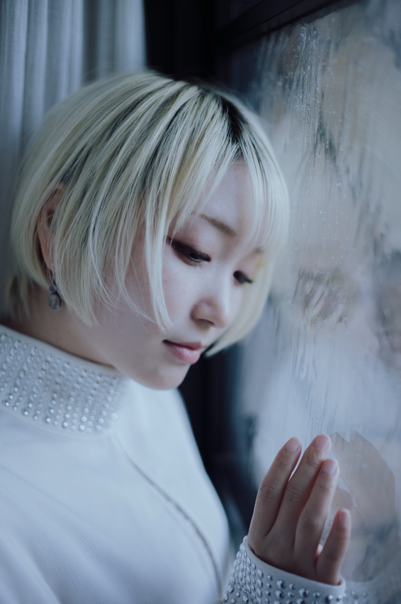
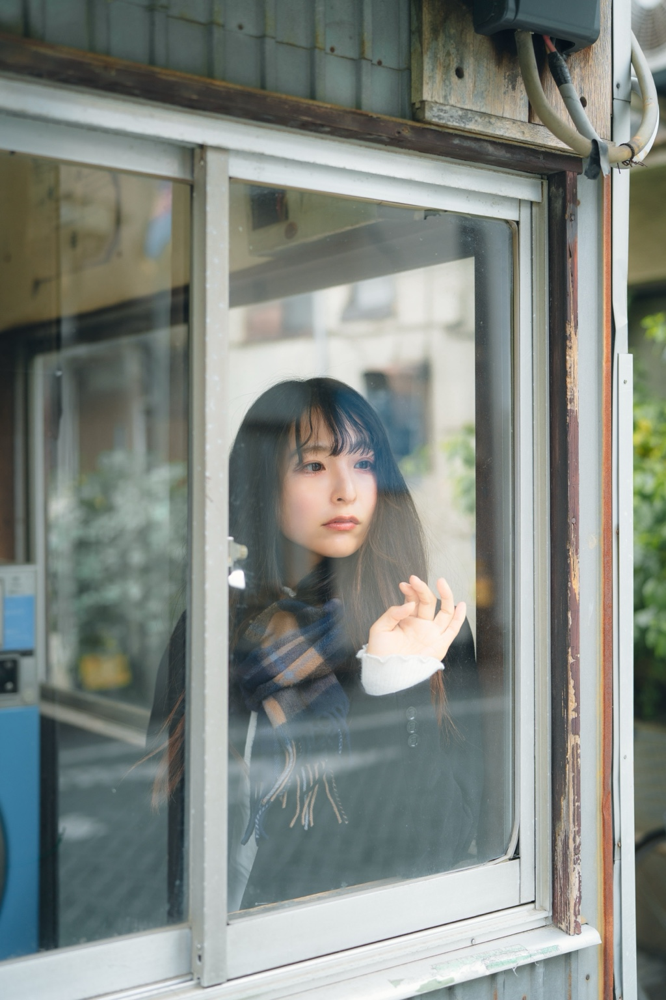
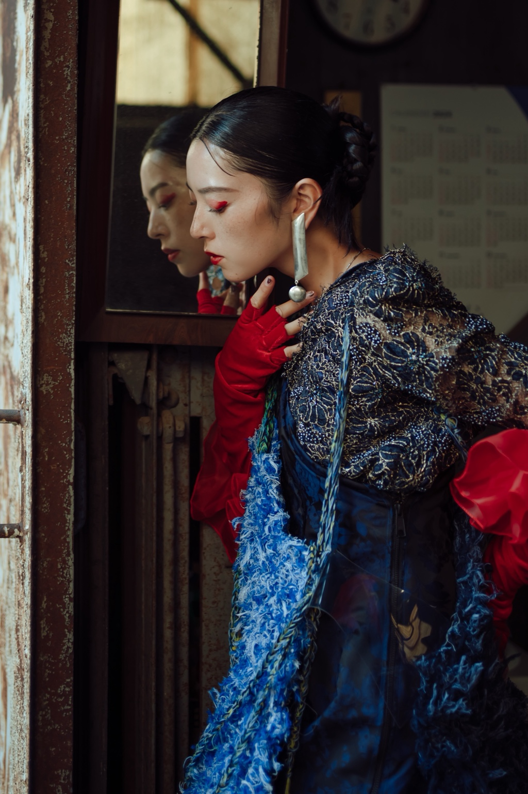
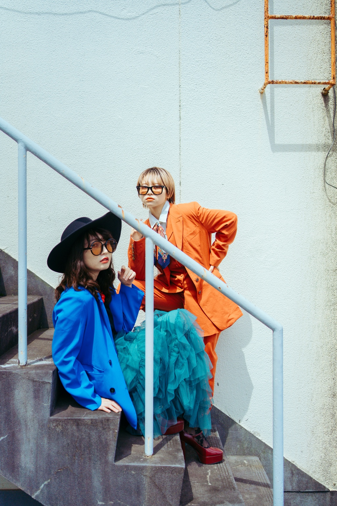
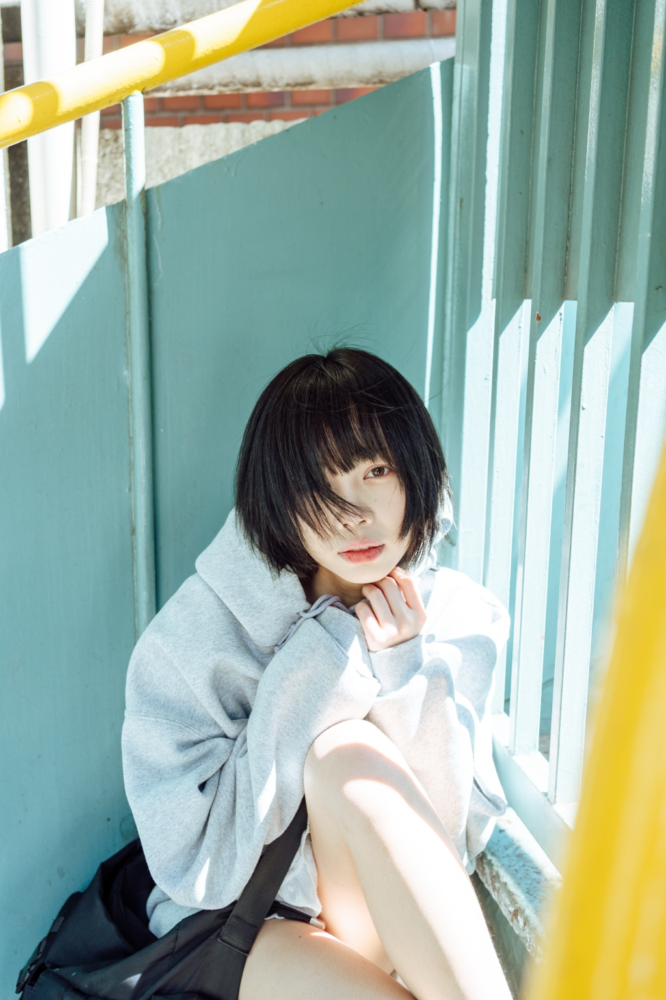

EMU — BETWEEN
BETWEEN
境界に残る人物の気配。
VEIL 01
01/10
Rain
VEIL 02
02/10
Book
BOUNDARY 01
03/10

Condensation
BOUNDARY 02
04/10

Window
REFLECTION 01
05/10

Reflection
BOUNDARY 03
06/10
Car
SPACE 01
07/10
Cafe
SPACE 02
08/10

Stairs
SPACE 03
09/10

Structure
FRAGMENT 01
10/10
Hair
×